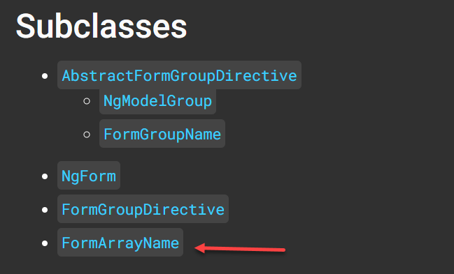

很久以前寫過一篇關於 ControlContainer 的文章，但那時候太菜不知道怎麼寫測試，今天回頭寫 ControlContainer 配上 formArrayName 時，熊熊發現不知道怎寫測試，稍微有點悲劇，但還好根據官方的測試檔案，還是可以整理出答案，以下就是如何測試有使用 ControlContainer 的 Component
Component 的用法
1
| <app-filter-field formArrayName="dynamicFields"></app-filter-field>
|
ts 的部分
1
2
3
4
5
6
7
8
9
10
11
12
| export class FilterFieldComponent implements OnInit {
...
formData!: FormArray;
constructor(private controlContainer: ControlContainer) {}
ngOnInit() {
this.formData = this.controlContainer.control as FormArray;
}
...
}
|
spec 檔案
1
2
3
4
5
6
7
8
9
10
11
12
13
14
15
16
17
18
19
20
21
22
| fdescribe('FilterFieldComponent', () => {
let component: FilterFieldComponent;
let fixture: ComponentFixture<FilterFieldComponent>;
let formModel: FormArray;
let formArrayDir: FormArrayName;
beforeEach(async () => {
const parent = new FormGroupDirective([], []);
formModel = new FormArray([]);
parent.form = new FormGroup({ dynamicFields: formModel });
formArrayDir = new FormArrayName(parent, [], []);
formArrayDir.name = 'dynamicFields';
await TestBed.configureTestingModule({
declarations: [FilterFieldComponent],
imports: [ReactiveFormsModule],
providers: [{ provide: ControlContainer, useValue: formArrayDir }],
schemas: [CUSTOM_ELEMENTS_SCHEMA],
}).compileComponents();
});
...
});
|
line 17: 因為 ControlContainer 需要特別去做 mock，所以這邊就手動註冊一下，但如果沒有寫過的人就會卡住，慘，這邊要用哪種型別的值，根據官方 API 文件說明，得知有以下幾種 subclass 可以使用

而其中的 FormArrayName 是我想要的類型，接下來的另外一個問題會是，如何建立 FormArrayName Class，這時候就是 line 8 ~ 12 的用途啦，這裡的寫法是參考官方的測試 form directive 的測試檔案
以上就是如何測試 ControlContainer 的設定寫法